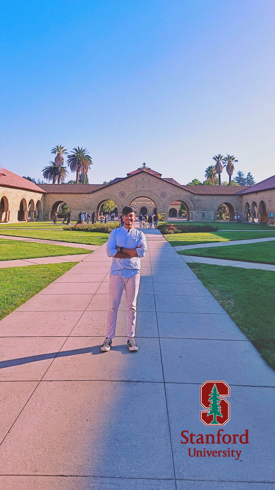

About Me
I am Shaswat Gupta—ETH Zurich MSc Computer Science student, AI researcher, ML engineer, and relentless innovator. Graduating top of my class at IIT Bombay with a gold medal (GPA: 9.6/10), I’ve consistently turned my passion for machine learning and AI into tangible, real-world impacts. My academic journey is defined by rigor, curiosity, and an unwavering dedication to mastering complex technologies.
My career has been shaped by deep expertise in Python, ML, and deep learning, driving transformative solutions across global enterprises. As a Data Scientist at AB-InBev, I designed an optimization engine delivering $2.4 million annually and created interactive logistics scenario planners impacting strategic decisions worth $5 million annually. At Glenmark Pharma, my automation of forecasting saved thousands of man-hours yearly, while my role at Protium empowered hundreds of SMEs through intelligent loan recommendations.
Expertise Highlight: Proven proficiency in Python, SQL, TensorFlow, PyTorch, cloud computing, and scalable ML engineering—translating sophisticated analytics into actionable business strategies.
Currently, as a Research Assistant at ETH Zurich’s Center for Technology and Innovation Management (CTIM), I have spent 1.5 years deeply immersed in cutting-edge AI research and practical ML engineering. My work includes scripting, data engineering, automated crawling, statistical testing, LLMs, and deploying advanced ML algorithms. By optimizing GPT-4-turbo pipelines, I achieved significant efficiency gains, notably reducing inference costs by 50%.
My academic research at ETH Zurich further underscores my robust expertise in large-scale AI and data-intensive computing. Undertaking a 6-month project at ETH’s Institute for Machine Learning, I built a self-supervised contrastive learning framework for EEG-based automatic sleep stage classification. Navigating intensive computational requirements, I leveraged HPC clusters (using SLURM for distributed computing), extensively tested CNN architectures, and systematically evaluated data augmentations, achieving notable performance (80%+ accuracy and 70% Macro-F1) with extremely lightweight models (~200k parameters).

My international experiences have broadened my perspectives, equipping me to thrive in global, collaborative settings. My initial semester exchange at ETH Zurich solidified my decision to return for graduate studies. Further, my roles as a delegate at Harvard HPAIR and Princeton Business Today enhanced my capability to collaborate internationally, adapting seamlessly to diverse professional contexts.
Beyond technical excellence, I am a passionate communicator, creatively bridging technology, philosophy, and storytelling. My journey as an award-winning journalist at IIT Bombay, and my current ventures into poetry and stand-up comedy, sharpen my ability to articulate complex ideas compellingly. Writing actively on Substack, I delve into thoughtful essays that intersect technology’s transformative potential with nuanced human insights. Having traveled to over twenty countries and living among 165 peers at ETH’s shared housing has honed my interpersonal and organizational skills, further enriching my storytelling and cultural intelligence.
Creative Edge: My artistic pursuits and global exposure infuse my technical work with originality, fresh perspectives, and innovative thinking.
My internships and academic achievements reflect a consistent pattern of impact and innovation. At Rephrase.AI, I contributed to generative adversarial networks (GAN) validation pipelines. At Protium, I designed data-driven loan recommendation systems, while at Glenmark Pharma, my analytics solutions significantly streamlined forecasting operations. My undergraduate years at IIT Bombay included notable recognitions, such as the prestigious O.P. Jindal Scholarship for Engineering Excellence and multiple academic excellence awards.
Looking forward, my ambition is clear: to become a leader in ML engineering, pioneering scalable, intelligent solutions that drive meaningful societal impact. I’m currently furthering this ambition by undertaking specialized coursework in Large-Scale AI Engineering. I welcome collaboration opportunities to innovate, exchange ideas, and collectively push the boundaries of what AI can achieve.
Let’s Connect: If you’re passionate about machine learning, innovation, or collaborative growth, I would love to hear from you.
Reach out, and let’s innovate together.